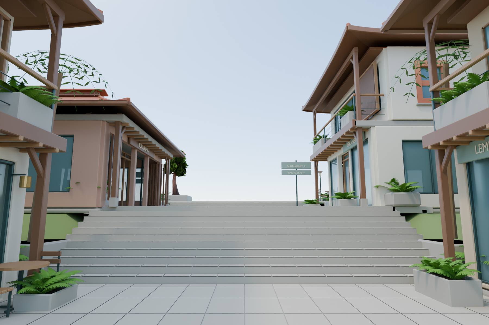
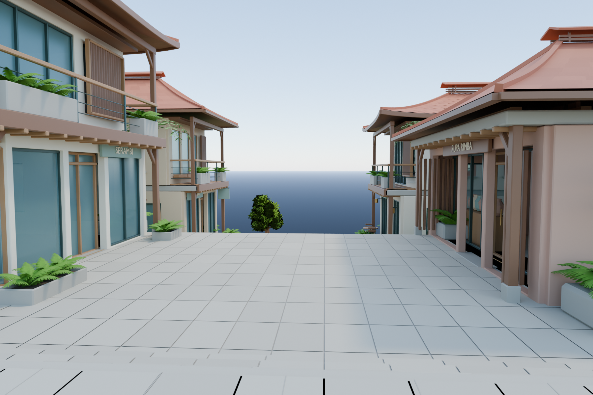
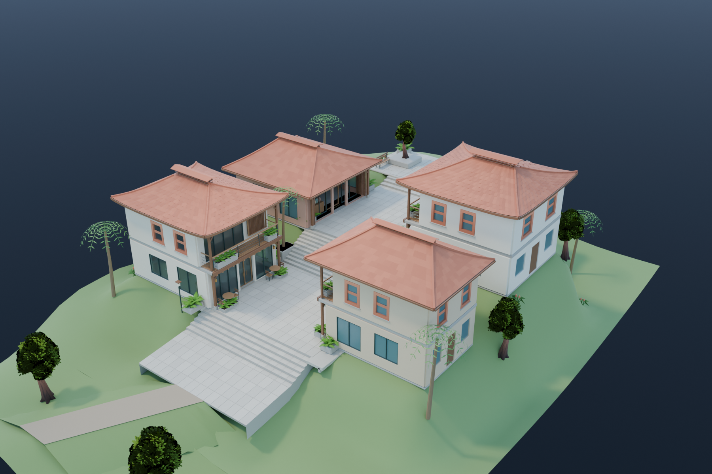
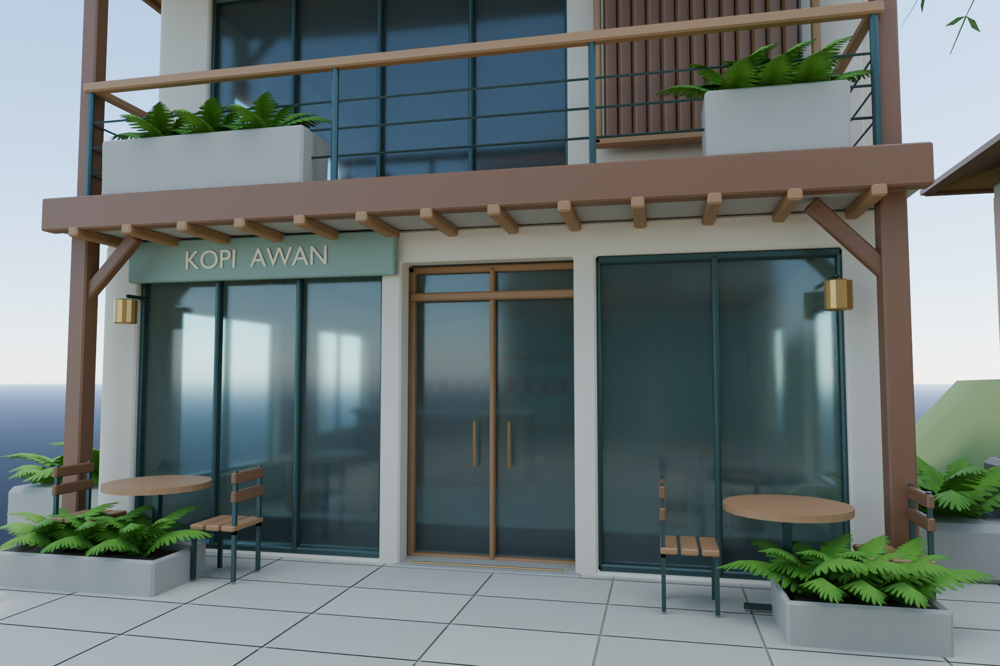
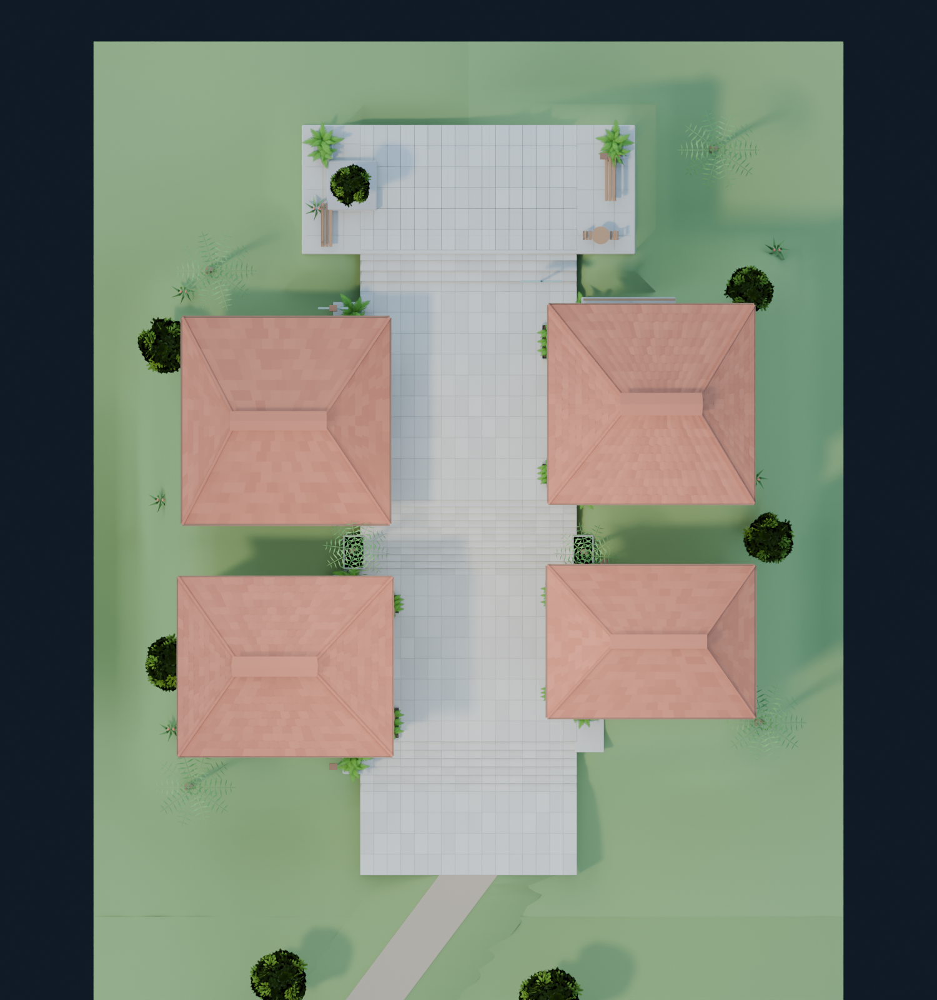
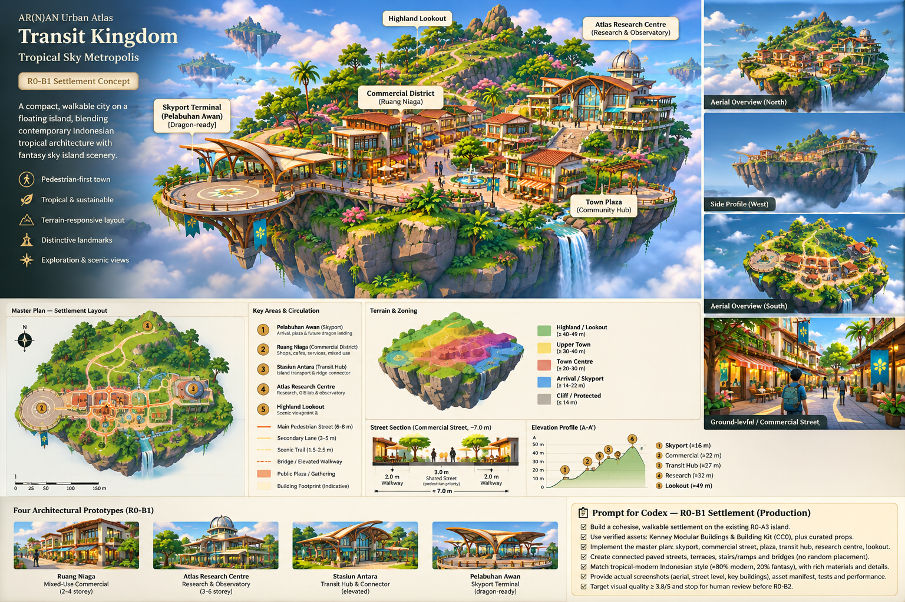

Market Street · S2-C
36 metres, four related storefronts, one isolated Blender art slice. Human visual approval pending. No production export or integration.
Geometry, site measurements and limitations · Sources and licenses · Native Blender project
Arrival / first market landing · 1.65 m eye height

Opposite pedestrian view

Complete section

Entrance, balcony, paving and planting detail

Top-down arrangement

Clear centre route; larger square opening at the north end. Full coordinate/clearance evidence is in the review record.Original design reference

Generated concept reference, not a rendering of the S2-C scene. The complete town and Guild are outside this phase.Existing LOD1 distance test
Optional test only. The main scene stays LOD0.